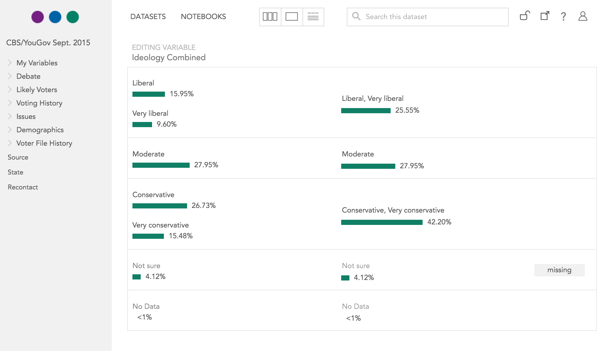

Dr. Datascience
Or: How I Learned to Stop Munging and Love Tests
Neal Richardson
neal@crunch.io
@enpiar
June 29, 2016
Revised version of 2016 R NYC Conference talk, with Mike Malecki
About me
* Political scientist
* Then worked in survey research industry
* Now in data product development
* Crunch.io
Data “Science”
vs. “Faith-based coding”
* Misplaced faith in own infallability 🤓✔︎
* Your code works because you believe it does
* Its output feels true 💁
Reproducibility
* Central to Science--or a bare minimum
* Give me your data and code and I should get the same results
* Code quality --> scientific quality
Extensibility
* Practical concern rather than scientific quality
* Indicator of healthy code
* Make your life easier
Extensibility
What will happen if I give you slightly different data?
* Meaningful results
* Complete failure
* Silent failure
Extensibility
* More data comes in (e.g. too many revise and resubmits)
* Replication study
* Recurring report
Goal #1: Bring more "science" to data science
* Improve code quality with lessons from software development
* Mind your metadata: your data is about something
Goal #2: talk about the dirty work
* Cliché that 90% of data science is "janitorial"
* In that case, improving our skills there will have big benefit
Tests
* Make the implicit explicit
* Turn assumptions into assertions
* Are a form of documentation
* Reduce complexity
* Are liberating
What are tests?
* Assertions, written in code, that your functions do what you expect
* That if you give certain inputs, you’ll get known, expected outputs
* That giving invalid input results in an expected failure
* Tests are code: code that must be run every time you make changes
Getting started
1. Make a package
source("mycode.R")
df <- read.csv("data.csv")
doThings(df)
Getting started
1. Make a package. Not that different.
library(rmycode)
df <- read.csv("data.csv")
doThings(df)
Use a package skeleton, such as https://github.com/nealrichardson/skeletor
Testing flow
2. Write test. Run it and see it fail.
3. Write code that makes test pass.
4. Run tests again. See them pass.
5. Repeat
Example
Read and analyze AWS Elastic Load Balancer logs
Example
enpiar:c npr$ R -e 'skeletor::skeletor("elbr")'
enpiar:c npr$ cd elbr
enpiar:elbr npr$ atom .
Example
# elbr/tests/testthat/test-read.R
context("read.elb")
test_that("read.elb returns a data.frame", {
expect_true(is.data.frame(read.elb("example.log")))
})
Example
enpiar:elbr npr$ make test
...
Loading required package: elbr
read.elb: 1
Failed -------------------------------------------------------------------------
1. Error: read.elb returns a data.frame (@test-something.R#4) ------------------
could not find function "read.elb"
1: .handleSimpleError(function (e)
{
e$call <- sys.calls()[(frame + 11):(sys.nframe() - 2)]
register_expectation(e, frame + 11, sys.nframe() - 2)
signalCondition(e)
}, "could not find function \"read.elb\"", quote(eval(expr, envir, enclos))) at testthat/test-something.R:4
2: eval(expr, envir, enclos)
DONE ===========================================================================
Error: Test failures
Example
# elbr/R/read-elb.R
read.elb <- function (file, stringsAsFactors=FALSE, ...) {
read.delim(file,
sep=" ",
stringsAsFactors=stringsAsFactors,
col.names=c("timestamp", "elb", "client_port", "backend_port",
"request_processing_time", "backend_processing_time",
"response_processing_time", "elb_status_code",
"backend_status_code", "received_bytes", "sent_bytes",
"request", "user_agent", "ssl_cipher", "ssl_protocol"),
...)
}
Example
enpiar:elbr npr$ make test
...
Loading required package: elbr
read.elb: .
DONE ===========================================================================
Example
test_that("read.elb returns a data.frame", {
df <- read.elb("example.log")
expect_true(is.data.frame(df))
expect_equal(dim(df), c(4, 15))
})
Example
enpiar:elbr npr$ make test
...
Loading required package: elbr
read.elb: .1
Failed -------------------------------------------------------------------------
1. Failure: read.elb returns a data.frame (@test-something.R#6) ----------------
dim(df) not equal to c(4, 15).
1/2 mismatches
[1] 3 - 4 == -1
DONE ===========================================================================
Error: Test failures
Example
read.elb <- function (file, stringsAsFactors=FALSE, ...) {
read.delim(file,
sep=" ",
header=FALSE, # <-- Oh, right.
stringsAsFactors=stringsAsFactors,
col.names=c("timestamp", "elb", "client_port", "backend_port",
"request_processing_time", "backend_processing_time",
"response_processing_time", "elb_status_code",
"backend_status_code", "received_bytes", "sent_bytes",
"request", "user_agent", "ssl_cipher", "ssl_protocol"),
...)
}
Example
enpiar:elbr npr$ make test
...
Loading required package: elbr
read.elb: ..
DONE ===========================================================================
Tests make explicit
* Tradeoffs everywhere ⚖
* Example: is an integer an implicit categorical?
* Don’t try to be clever.
* Don't assume it's obvious.
Tests assert
* You can assert dumb things like row counts
* Datetime data is *never* simple 📅
* Don’t be surprised by being wrong later

Tests document
* Example: “I combined categories” aka “recode”
* The data itself doesn’t preserve this relationship
* Missingness is hard
* Did I already do it?
`df$col[df$col == 1 | df$col == 2] <- 1`

Tests simplify
* Turn big, hard-to-reason-about problems into small ones
* `expect_equal(dimnames(pred), dimnames(population))`
num [1:4, 1:4, 1:6, 1:51, 1:3] 0.0196 0.0414 0.038 0.0106 0.0167 ...
- attr(*, "dimnames")=List of 5
..$ edu : chr [1:4] "<HS" "HS" "Some" "Grad"
..$ age : chr [1:4] "18-29" "30-44" "45-64" "≥65"
..$ race.female: chr [1:6] "White M" "Black M" "Hispanic M" "White F" ...
..$ state : chr [1:51] "AK" "AL" "AR" "AZ" ...
..$ party : chr [1:3] "R" "I" "D"
Tests liberate
* Free to extend your code without worrying about breaking what it already does
* Fix bugs and handle unforeseen complications only once
You can also test your data
But be careful about performance
Metadata is magical
* Nobody cares about your 1s and 2s. They care about Males and Females, "Leave" vs. "Remain" voters, Coke or Pepsi
* Any graph or table you produce needs to be nicely labeled
Respect your metadata
* Can be a hassle to keep metadata and data in sync
* Necessary for reporting
* Important for extensibility: reference the meaningful quantity, independent of the compact data representation
How to respect your metadata
* Use software and libraries that help you
* Avoid positional indexing: assumes sort order of data/metadata
* Avoid indexing on internal data representation (at least at highest level)
* Be explicit about the data-metadata contract you assume
with tests...
* Be skeptical of your data sources
even if you're the source
Fail early and loudly
* Worse than no results: the wrong results masquerading as valid
* Well-tested code is easier to debug
* It's also way easier to fix--and you only have to fix the same issue once
Why not just hack?
Because data contracts can't be trusted
Because you'll have to extend your code to do something else

Because someone else will pick up your code in the future
Because that someone else could be your future self
Because you’re already testing, just not systematically
Well tested, resiliant code is always valuable
* Even more valuable when you're reusing code
* You reuse code more than you think you will
* Hard to "add code quality" after the fact
Dr. Datascience
Or: How I Learned to Stop Munging and Love Tests
Neal Richardson
neal@crunch.io
@enpiar